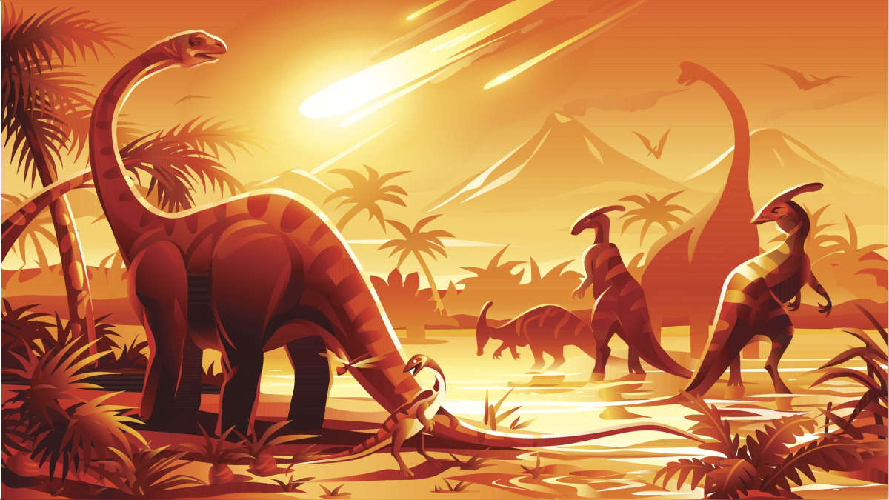

La Paleontología es la ciencia que se encarga del estudio de los fósiles y la historia de la vida en la Tierra. Su objetivo principal es reconstruir la evolución de la vida a lo largo de millones de años, examinando los restos fósiles de organismos que vivieron en el pasado. Los fósiles son evidencias físicas de organismos antiguos que se han conservado en rocas sedimentarias a lo largo del tiempo geológico.
Los fósiles pueden ser restos de organismos, como huesos, dientes, conchas o madera petrificada, o impresiones de organismos, como huellas de pisadas, hojas o marcas dejadas por la actividad biológica. Estos vestigios proporcionan pistas cruciales sobre la historia de la vida en la Tierra, incluyendo la evolución de especies, la distribución de organismos en el pasado y las condiciones ambientales de épocas antiguas.
Los dinosaurios, con su majestuosidad y diversidad, han cautivado a personas de todas las edades. Estos seres prehistóricos dominaron la Tierra durante más de 180 millones de años, desde el período Triásico hasta el Cretácico. Su legado en la historia de la Tierra es impresionante. A continuación, profundizaremos en el descubrimiento de los dinosaurios, su misteriosa extinción y el sorprendente legado que dejaron a través de sus descendientes aviares.
El término "dinosaurio" fue acuñado en el siglo XIX por Sir Richard Owen, marcando el inicio de la paleontología de dinosaurios. Desde entonces, se han identificado y nombrado miles de especies de dinosaurios en todo el mundo. Estos hallazgos han permitido reconstruir su apariencia, comportamiento y cómo se adaptaron a diversos entornos.
La extinción masiva de los dinosaurios hace unos 65 millones de años es uno de los misterios más fascinantes de la historia de la Tierra. Se cree que un impacto de asteroide en lo que hoy es México y la consiguiente alteración climática causaron su desaparición.

Sin embargo, sus parientes evolutivos, las aves modernas, sobrevivieron y prosperaron. Las aves son consideradas descendientes directos de los dinosaurios y continúan siendo una parte integral de la vida en nuestro planeta. Su historia es un testimonio asombroso de la capacidad de la vida para adaptarse y evolucionar a lo largo de inmensos períodos de tiempo.
La paleontología humana es una disciplina fascinante que se adentra en el pasado para iluminar la compleja historia de la evolución de los seres humanos y sus ancestros a lo largo de un asombroso período de millones de años. En esta exploración apasionante, nos sumergiremos en los detalles de los fósiles humanos más antiguos, la extraordinaria saga de Homo erectus y los misteriosos neandertales, la notable evolución de Homo sapiens y los emocionantes hallazgos que han emergido de la Cueva de Denisova.
Fósiles Humanos Antiguos: Los fósiles humanos más antiguos conocidos, que datan de hace más de 6 millones de años, nos transportan a los albores de la historia humana. Estos restos, representados por especies como "Ardipithecus ramidus" y "Sahelanthropus tchadensis", nos brindan valiosas pistas sobre los primeros pasos de la evolución humana en el continente africano. A través de estos fósiles, podemos vislumbrar cómo nuestros antecesores comenzaron a adaptarse para caminar erguidos y desarrollaron características distintivas, como cerebros más grandes, que marcaron el camino hacia la humanidad moderna.
Homo Erectus y Neandertales: La historia de Homo erectus nos lleva en un viaje a través del tiempo y el espacio. Esta antigua especie humana se aventuró en una migración que la llevó a dispersarse por todo el continente asiático hace aproximadamente 1.9 millones de años, dejando huellas de su evolución. Por otro lado, los neandertales, nuestros parientes más cercanos en el árbol genealógico humano, poblaron Europa y Asia desde hace 400,000 hasta 40,000 años atrás. Investigaciones genéticas han revelado evidencia de interacciones entre los neandertales y los humanos modernos, lo que plantea cuestiones intrigantes sobre nuestras relaciones y la dinámica de la evolución humana.